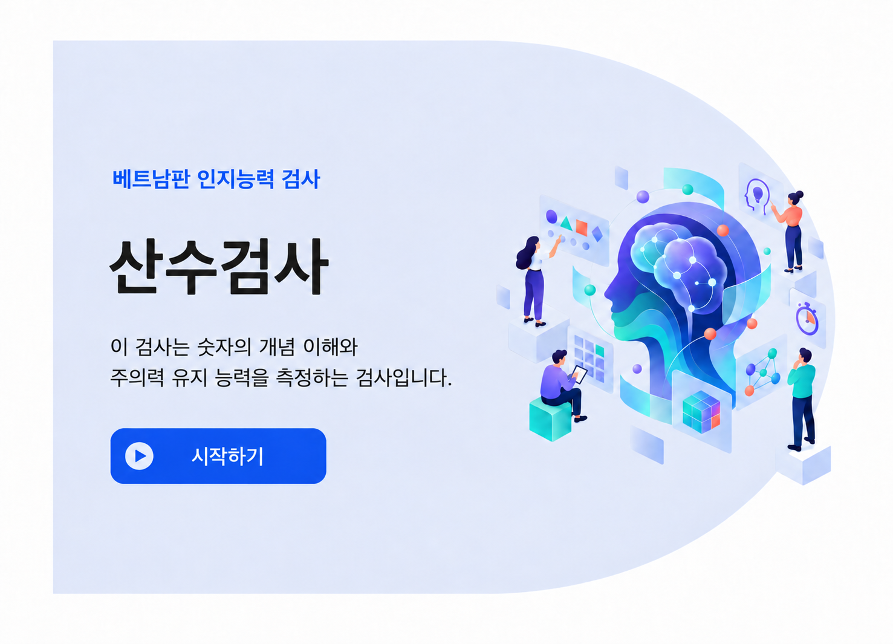

<!DOCTYPE html>
<html lang="ko">
<head>
<meta charset="UTF-8" />
<title>수리계산 - 데모</title>
<script src="https://unpkg.com/jspsych@8.3.0"></script>
<script src="https://unpkg.com/@jspsych/plugin-html-keyboard-response@2.2.0"></script>
<link href="https://unpkg.com/jspsych@8.3.0/css/jspsych.css" rel="stylesheet" type="text/css" />
<style>
  html, body { height: 100%; margin: 0; padding: 0; overflow: hidden; }
  body { font-family: 'Noto Sans KR', 'Segoe UI', sans-serif; background: #f4f6fb;
    display: flex; align-items: center; justify-content: center; }
  /* jsPsych이 자체적으로 만드는 래퍼(#jspsych-content-wrapper 등)에도
     기본 overflow:auto 스타일이 있어서, 이것 때문에 스크롤바가 생길 수 있어 강제로 막습니다. */
  #jspsych-content-wrapper, .jspsych-display-element, #jspsych-content {
    height: 100% !important; width: 100% !important; margin: 0 !important; padding: 0 !important;
    overflow: hidden !important; display: flex !important; align-items: center !important;
    justify-content: center !important;
  }
  /* 고정 크기 슬라이드 프레임 — 내용과 무관하게 항상 같은 크기로 그린 뒤,
     창 크기에 맞춰 이 프레임 전체를 통째로 한 번만 scale합니다.
     (화면마다 내용 길이가 달라 매번 다르게 줄어드는 문제를 막기 위함) */
  .math-wrap { width: 1100px; height: 950px; box-sizing: border-box; margin: 0;
    padding: 70px 80px; display: flex; flex-direction: column; justify-content: center;
    overflow: hidden; transform-origin: center center; flex-shrink: 0; }
  /* 모든 화면(타이틀/지시문/문항/닫기/경고)이 항상 같은 폭·같은 위치를 쓰도록 고정하는 컬럼.
     화면마다 카드 크기가 달라져 위치가 들쭉날쭉해지는 것을 막습니다. */
  .content-col { width: 840px; margin: 0 auto; }

  /* 상단 헤더: 소검사명 태그 + 문항 진행도 */
  .math-header { display: flex; align-items: center; justify-content: space-between; margin-bottom: 28px; }
  .math-tag { font-weight: 700; font-size: 28px; color: #1c3f94; border-left: 6px solid #2554c7;
    padding-left: 16px; }
  .math-progress { background: #2554c7; color: #fff; font-weight: 600; font-size: 18px;
    padding: 12px 26px; border-radius: 26px; }

  /* 문제만 보여주는 카드 (5초) */
  .question-card { background: #fafbfe; border: 1px solid #e1e6f2; border-radius: 20px;
    padding: 70px 50px; min-height: 260px; display: flex; align-items: center; justify-content: center;
    text-align: center; font-size: 34px; font-weight: 600; color: #2b2b2b; line-height: 1.7; }

  /* 응답 단계를 감싸는 바깥 카드 */
  .response-card { background: #fff; border: 2px solid #2554c7; border-radius: 20px; padding: 32px; }

  /* Xem lại | 입력값 | Nhập lại 한 줄 */
  .control-row { display: flex; align-items: center; gap: 18px; margin-bottom: 32px; }
  .side-btn { flex: 0 0 auto; padding: 24px 30px; border-radius: 14px; border: 1px solid #b9c7ea;
    background: #eaf0fd; color: #1c3f94; font-weight: 600; font-size: 24px; cursor: pointer; }
  .side-btn:disabled { opacity: 0.4; cursor: not-allowed; }
  .answer-box { flex: 1 1 auto; display: flex; align-items: center; justify-content: space-between;
    border: 2px solid #2554c7; border-radius: 12px; padding: 18px 24px; }
  .answer-box .label { font-size: 20px; color: #7a86a3; }
  .answer-box .value { font-size: 36px; font-weight: 700; color: #1c3f94; min-width: 50px; text-align: right; }

  /* 숫자 키패드 1~9 */
  .keypad { display: grid; grid-template-columns: repeat(3, 1fr); gap: 18px; margin-bottom: 32px; }
  .keypad button { font-size: 34px; font-weight: 600; padding: 30px 0; border-radius: 14px;
    border: 1px solid #dfe4ee; background: #f7f8fc; color: #333; cursor: pointer; }
  .keypad button:hover { background: #eef1fa; }

  .next-btn { display: block; width: 100%; font-size: 28px; font-weight: 700; padding: 22px 0;
    border-radius: 14px; border: none; background: #2554c7; color: white; cursor: pointer; }
  .next-btn:hover { background: #1c3f94; }

  .mask { width: 100%; height: 320px; }

  /* ── 안내/지시문 화면 전용 ── */
  .info-box { background: #fafbfe; border: 1px solid #e1e6f2; border-radius: 16px;
    padding: 28px 32px; font-size: 24px; line-height: 1.7; color: #2b2b2b; margin-bottom: 28px; }
  .badge { display: inline-block; background: #eaf0fd; color: #1c3f94; font-weight: 700;
    font-size: 20px; padding: 10px 22px; border-radius: 20px; border: 1px solid #c7d4f5; margin-bottom: 18px; }
  .highlight { outline: 4px solid #e53935; outline-offset: 3px; }
  .keypad button.selected { background: #b9c7ea; }
  .mockup-inert { pointer-events: none; }
  .mockup-inert button:disabled { cursor: default; }
  .btn-row { text-align: center; margin-top: 44px; }
  .btn-row .next-btn { display: inline-block; width: auto; min-width: 260px; margin: 0 10px; }
  .btn-row .secondary-btn { background: #fff; color: #2554c7; border: 2px solid #2554c7; }
  .btn-row .secondary-btn:hover { background: #eaf0fd; }
  .warn-card { max-width: 640px; margin: 0 auto; text-align: center; background: #fff;
    border-radius: 50% / 30%; padding: 80px 50px; box-shadow: 0 0 0 1px #e1e6f2 inset; }
  .warn-card p { font-size: 26px; line-height: 1.7; color: #33425c; margin-bottom: 30px; }

  /* 지시문 화면의 미리보기(mockup) 요소는 완전히 비활성 — 클릭/호버 반응 없음 */
  button:disabled { pointer-events: none !important; cursor: default !important; }

  /* 지시문(튜토리얼) 화면을 넘기는 실제 버튼 — 카드 안의 설명용(가짜) Tiếp theo 버튼과
     헷갈리지 않도록 완전히 다른 모양(원형 화살표)으로, 카드 바깥 옆에 둡니다. */
  .nav-arrow-btn { flex: 0 0 auto; width: 76px; height: 76px; border-radius: 50%; border: none;
    background: #2554c7; color: #fff; font-size: 32px; line-height: 1; cursor: pointer;
    box-shadow: 0 10px 24px rgba(37,84,199,0.35); display: flex; align-items: center; justify-content: center; }
  .nav-arrow-btn:hover { background: #1c3f94; }

  /* 카드 안 숫자가 눌리는 것처럼 보이는 애니메이션 */
  .keypad button.key-press { background: #9fb3e6 !important; transform: scale(0.93);
    transition: transform .12s ease, background .12s ease; }
  .answer-box .value { transition: opacity .15s ease; }

  /* 카드 안의 Tiếp theo/Xem lại/Nhập lại 버튼이 "눌리는" 것처럼 보이는 애니메이션 */
  .btn-pressed { transform: scale(0.95); filter: brightness(0.9);
    transition: transform .12s ease, filter .12s ease; }

  /* ── 타이틀 화면: 원본 PPT 슬라이드를 고해상도로 그대로 캡처한 이미지 한 장을
     씁니다. 원래 원본 디자인은 배경 원이 슬라이드 왼쪽 경계에서 잘려 있었는데,
     그 원의 실제 곡선을 그대로 분석해서(피팅) 캔버스를 왼쪽/위/아래로 넓히고
     같은 색으로 이어 그려서 이미지 자체가 "완전히 잘리지 않는 원"이 되도록
     미리 보정해 놓은 파일이 images/title-slide.png 입니다.
     창 전체(100vw/100vh)를 이미지로 빈틈없이 꽉 채웁니다(object-fit: cover —
     화면 비율에 따라 이미지 일부가 살짝 잘릴 수는 있지만 흰 여백/레터박스는
     절대 생기지 않습니다). "시작하기" 버튼 자리는 더 이상 고정 퍼센트가 아니라,
     이미지 원본 픽셀 좌표(data-px/py/pw/ph)를 기준으로 실제 화면에 그려지는
     cover 크롭/스케일을 매 순간 계산해서 자바스크립트로 위치를 맞춥니다
     (아래 layoutCoverHitboxes 함수, resize 시에도 재계산). */
  .title-full { position: fixed; inset: 0; width: 100vw; height: 100vh; background: #fff;
    overflow: hidden; }
  .slide-wrap { position: absolute; inset: 0; }
  .slide-img { position: absolute; display: block; }
  .slide-hitbox { position: absolute; background: transparent; border: none; padding: 0;
    cursor: pointer; }

  /* ── 한국어 타이틀 화면: 직접 제작하신 한국어판 이미지(images/title-slide.png)를
     베트남판과 동일한 cover+안전영역(safe-x) 방식으로 꽉 채웁니다. ── */
</style>
</head>
<body></body>
<script>

const { ParameterType } = jsPsychModule;

// ── 모든 화면이 항상 같은 비율로 보이도록, 고정 크기(.math-wrap: 1100×950)
//    프레임을 "창 크기"만 기준으로 한 번 계산한 scale값으로 일괄 축소합니다.
//    (화면마다 다시 측정해서 scale을 바꾸면 화면 전환 때마다 크기가 들쭉날쭉해짐 → 금지)
const FRAME_W = 1100;
const FRAME_H = 950;
let currentScale = 1;

function computeScale() {
  const margin = 16;
  currentScale = Math.min(
    (window.innerWidth - margin * 2) / FRAME_W,
    (window.innerHeight - margin * 2) / FRAME_H
  );
  applyScale();
}

function applyScale() {
  const wrap = document.querySelector(".math-wrap");
  if (!wrap) return;
  // 타이틀 화면(.slide-frame)은 100vw/100vh로 직접 꽉 채우는 방식이라
  // scale() 변환이 필요 없습니다(건드리면 오히려 어긋남).
  if (wrap.classList.contains("slide-frame")) return;
  wrap.style.transform = `scale(${currentScale})`;
}

const fitObserver = new MutationObserver(() => applyScale());
fitObserver.observe(document.body, { childList: true, subtree: true });
window.addEventListener("resize", computeScale);
computeScale();

// ── 수리계산(Tính toán số học) 예시 5문항 ──
// NOTE: "78", "2500" 정답은 숫자 0을 포함합니다.
// 디자인(PDF)의 키패드는 1~9만 있고 0이 없어서, 이 두 문항은 현재 키패드로는 입력이 불가능합니다.
// 실제 문항에 0이 들어가는 답이 없다면 상관없지만, 있다면 0 키 추가 여부를 확인해 주세요.
const ITEMS = [
  { question: "민수는 사탕을 9개 가지고 있고, 두이는 사탕을 2개 가지고 있습니다.<br>민수는 두이보다 사탕을 몇 개 더 많이 가지고 있나요?", answer: "7" },
  { question: "현아는 6월에 구슬 42개를 주웠고, 7월에 구슬 35개를 주웠습니다.<br>현아가 두 달 동안 주운 구슬은 모두 몇 개인가요?", answer: "77" },
  { question: "강당에 의자가 90개 있습니다. 의자 12개를 밖으로 옮기면<br>강당에 남는 의자는 몇 개인가요?", answer: "78" }, // 0 포함 — 위 NOTE 참고
  { question: "책상 하나에 의자가 4개씩 있습니다.<br>책상 8개에는 의자가 모두 몇 개 있나요?", answer: "32" },
  { question: "성호는 용돈으로 500원을 받았고, 형은 그 금액의 5배를 받았습니다.<br>형이 받은 용돈은 얼마인가요?", answer: "2500" }, // 0 포함 — 위 NOTE 참고
];

// ── 지시문 화면에서 보여줄 응답카드 미리보기(mockup) ──
// Xem lại/입력창/Nhập lại/키패드/카드 안 "Tiếp theo"는 전부 완전히 비활성(클릭 불가) —
// 실제 검사 화면이 이렇게 생겼다는 것만 "보여주는" 용도입니다.
// animType으로 어떤 연출을 반복 재생할지 정합니다:
//   "type-digits"  : 키패드 숫자가 실제로 눌리는 것처럼 바뀜 (animateDigits 배열 사용)
//   "press-next"   : 카드 안 "Tiếp theo" 버튼만 주기적으로 눌리는 효과
//   "press-retype" : "Nhập lại" 버튼이 눌리면서 입력값이 사라졌다 돌아오는 효과
//   "press-again"  : "Xem lại" 버튼이 눌리면서 문제 화면이 잠깐 다시 보였다 사라지는 효과
// 화면을 실제로 넘기는 버튼은 이 카드 밖, 별도의 원형 화살표 버튼입니다.
function mockupCard({
  highlight = null, answerValue = "", selectedDigit = null,
  animateDigits = null, animType = null, animValue = "", animQuestion = "",
  button = "다음 →",
} = {}) {
  const hl = (name) => (highlight === name ? "highlight" : "");
  const initialVal = animateDigits ? "" : answerValue;
  const type = animateDigits ? "type-digits" : animType;
  const dataAttrs = type
    ? `data-anim-type="${type}" data-animate-digits="${(animateDigits || []).join(",")}"
       data-anim-value="${(animValue || "").replace(/"/g, "&quot;")}"
       data-anim-question="${(animQuestion || "").replace(/"/g, "&quot;")}"`
    : "";
  return `
    <div class="response-card" ${dataAttrs}>
      <div class="mockup-inert">
        <div class="control-row">
          <button class="side-btn ${hl("again")}" disabled>다시 보기</button>
          <div class="answer-box ${hl("answer")}">
            <span class="label">입력한 답</span>
            <span class="value">${initialVal || "&nbsp;"}</span>
          </div>
          <button class="side-btn ${hl("retype")}" disabled>다시 입력</button>
        </div>
        <div class="keypad">
          ${[1,2,3,4,5,6,7,8,9].map(n => `<button disabled class="${String(selectedDigit) === String(n) ? "selected" : ""}">${n}</button>`).join("")}
        </div>
        ${button ? `<button class="next-btn ${hl("next")}" disabled>${button}</button>` : ""}
      </div>
    </div>`;
}

// ── mockupCard의 data-anim-type에 따라 알맞은 연출을 반복 재생 ──
let mockupAnimTimer = null;
let mockupAnimTimeouts = [];

function clearMockupAnim() {
  if (mockupAnimTimer) { clearInterval(mockupAnimTimer); mockupAnimTimer = null; }
  mockupAnimTimeouts.forEach(clearTimeout);
  mockupAnimTimeouts = [];
}

function initMockupAnimation(root) {
  clearMockupAnim();
  const card = root.querySelector(".response-card[data-anim-type]");
  if (!card) return;
  const type = card.dataset.animType;

  if (type === "type-digits") {
    const seq = card.dataset.animateDigits.split(",").map((s) => s.trim()).filter(Boolean);
    if (!seq.length) return;
    const valueEl = card.querySelector(".value");
    const keypadBtns = Array.from(card.querySelectorAll(".keypad button"));
    let i = 0;
    let typed = "";
    const step = () => {
      const d = seq[i % seq.length];
      typed = seq.length === 1 ? d : typed.length >= 2 ? d : typed + d;
      valueEl.textContent = typed;
      keypadBtns.forEach((b) => b.classList.remove("selected", "key-press"));
      const btn = keypadBtns.find((b) => b.textContent.trim() === d);
      if (btn) {
        btn.classList.add("selected", "key-press");
        mockupAnimTimeouts.push(setTimeout(() => btn.classList.remove("key-press"), 180));
      }
      i++;
    };
    step();
    mockupAnimTimer = setInterval(step, 900);
    return;
  }

  if (type === "press-next") {
    const btn = card.querySelector(".next-btn");
    if (!btn) return;
    const press = () => {
      btn.classList.add("btn-pressed");
      mockupAnimTimeouts.push(setTimeout(() => btn.classList.remove("btn-pressed"), 220));
    };
    press();
    mockupAnimTimer = setInterval(press, 1500);
    return;
  }

  if (type === "press-retype") {
    const btn = card.querySelector(".side-btn.highlight");
    const valueEl = card.querySelector(".value");
    const original = card.dataset.animValue || "";
    if (!btn || !valueEl) return;
    let cleared = false;
    const step = () => {
      if (!cleared) {
        btn.classList.add("btn-pressed");
        mockupAnimTimeouts.push(setTimeout(() => {
          btn.classList.remove("btn-pressed");
          valueEl.innerHTML = "&nbsp;";
          cleared = true;
        }, 220));
      } else {
        valueEl.textContent = original;
        cleared = false;
      }
    };
    step();
    mockupAnimTimer = setInterval(step, 950);
    return;
  }

  if (type === "press-again") {
    const btn = card.querySelector(".side-btn.highlight");
    const questionHtml = card.dataset.animQuestion || "";
    const parent = card.parentElement;
    if (!btn || !parent) return;
    let showingQuestion = false;
    const step = () => {
      if (!showingQuestion) {
        btn.classList.add("btn-pressed");
        mockupAnimTimeouts.push(setTimeout(() => {
          btn.classList.remove("btn-pressed");
          card.style.visibility = "hidden";
          const q = document.createElement("div");
          q.className = "question-card anim-question-overlay";
          q.style.position = "absolute";
          q.style.inset = "0";
          q.innerHTML = questionHtml;
          parent.style.position = "relative";
          parent.appendChild(q);
          showingQuestion = true;
        }, 220));
      } else {
        const overlay = parent.querySelector(".anim-question-overlay");
        if (overlay) overlay.remove();
        card.style.visibility = "";
        showingQuestion = false;
      }
    };
    step();
    mockupAnimTimer = setInterval(step, 1200);
    return;
  }
}

// 화면을 이미지로 최대한 꽉 채우되(object-fit:cover와 같은 개념을 직접 계산),
// 글씨/버튼이 들어있는 "안전 영역"(data-safe-x)만큼은 아무리 화면이 좁고 길어도
// 절대 잘리지 않도록 스케일을 제한합니다. 그 스케일에 맞춰 이미지 자체와
// 버튼 히트박스(.slide-hitbox, data-px/py/pw/ph)를 둘 다 매번 다시 배치합니다.
// (보통 화면 비율에서는 일반 cover와 동일하게 빈틈없이 꽉 차고, 아주 좁고 긴
// 화면에서만 오른쪽에 약간의 흰 여백이 생기는 대신 글씨/버튼은 항상 보장됩니다)
function layoutCoverHitboxes(container) {
  const img = container.querySelector(".slide-img");
  if (!img) return;
  const iw = Number(img.dataset.iw) || img.naturalWidth;
  const ih = Number(img.dataset.ih) || img.naturalHeight;
  if (!iw || !ih) return;
  const safeX = Number(img.dataset.safeX) || iw; // 이 x좌표까지는 반드시 보이게
  const rect = container.getBoundingClientRect();
  const W = rect.width, H = rect.height;
  const coverScale = Math.max(W / iw, H / ih);
  const safeScale = W / safeX;
  const scale = Math.min(coverScale, safeScale);
  const dispW = iw * scale, dispH = ih * scale;
  // 가로는 왼쪽 기준(0), 세로는 중앙(0.5) — safeScale이 적용돼 dispH < H가 되는
  // 극단적인 경우에도 위아래로 균등하게 배치됩니다.
  const offsetX = (W - dispW) * 0;
  const offsetY = (H - dispH) * 0.5;
  img.style.left = offsetX + "px";
  img.style.top = offsetY + "px";
  img.style.width = dispW + "px";
  img.style.height = dispH + "px";
  container.querySelectorAll(".slide-hitbox").forEach((btn) => {
    const px = Number(btn.dataset.px), py = Number(btn.dataset.py);
    const pw = Number(btn.dataset.pw), ph = Number(btn.dataset.ph);
    btn.style.left = offsetX + px * scale + "px";
    btn.style.top = offsetY + py * scale + "px";
    btn.style.width = pw * scale + "px";
    btn.style.height = ph * scale + "px";
  });
}

// ── 지시문/안내 화면용 범용 플러그인 (버튼 클릭으로 다음으로 진행) ──
class InfoScreenPlugin {
  static info = {
    name: "info-screen",
    version: "1.0.0",
    parameters: {
      tag: { type: ParameterType.STRING, default: "수리계산" },
      body_html: { type: ParameterType.HTML_STRING, default: "" },
      mockup_html: { type: ParameterType.HTML_STRING, default: "" },
      buttons: { type: ParameterType.STRING, array: true, default: ["다음 →"] },
      use_arrow_nav: { type: ParameterType.BOOL, default: false },
      hero: { type: ParameterType.BOOL, default: false },
    },
    data: { response: { type: ParameterType.STRING } },
  };

  constructor(jsPsych) { this.jsPsych = jsPsych; }

  trial(display_element, trial) {
    // 타이틀(첫) 화면 — 다른 화면들의 "고정 프레임 + scale()" 방식 대신
    // 창 전체(100vw/100vh)를 반응형으로 꽉 채우는 전용 레이아웃을 씁니다.
    // body_html 안에 배경원(.hero-circle)·텍스트·일러스트·버튼이 전부 들어있습니다.
    if (trial.hero) {
      display_element.innerHTML = `<div class="title-full">${trial.body_html}</div>`;
      const container = display_element.querySelector(".title-full");
      const img = container.querySelector(".slide-img");
      const relayout = () => layoutCoverHitboxes(container);
      if (img) {
        if (img.complete && img.naturalWidth) relayout();
        else img.addEventListener("load", relayout);
      }
      window.addEventListener("resize", relayout);
      display_element.querySelectorAll("[data-i]").forEach((btn) => {
        btn.addEventListener("click", () => {
          clearMockupAnim();
          window.removeEventListener("resize", relayout);
          this.jsPsych.finishTrial({ response: trial.buttons[btn.dataset.i] });
        });
      });
      return;
    }

    const multi = trial.buttons.length > 1;
    const btnsHtml = trial.buttons
      .map((label, i) => {
        const secondary = multi && i === 0 ? "secondary-btn" : "";
        return `<button class="next-btn ${secondary}" data-i="${i}">${label}</button>`;
      })
      .join("");

    // 단일 버튼 + mockup이 있는 지시문 화면: 카드 "옆"에 원형 화살표로 화면을 넘김
    // (카드 안의 가짜 Tiếp theo와 헷갈리지 않게 모양을 완전히 다르게)
    // 카드 세로 중앙(문제/키패드 중간 높이)에 맞춰 절대위치로 붙입니다.
    const bodyAndNav =
      trial.use_arrow_nav && !multi
        ? `<div style="position:relative;">
             ${trial.mockup_html || ""}
             <button class="nav-arrow-btn" data-i="0" aria-label="${trial.buttons[0]}"
               style="position:absolute; top:50%; right:-96px; transform:translateY(-50%);">→</button>
           </div>`
        : `${trial.mockup_html || ""}<div class="btn-row">${btnsHtml}</div>`;

    // content-col: 모든 화면(타이틀/지시문/문항/닫기/경고)이 항상 동일한 폭·위치를 쓰도록
    // 고정폭 가운데 정렬 컬럼으로 통일 — 화면마다 카드 위치가 달라지지 않게 함.
    display_element.innerHTML = `
      <div class="math-wrap">
        <div class="content-col">
          ${trial.tag ? `<div class="math-header"><div class="math-tag">${trial.tag}</div></div>` : ""}
          ${trial.body_html}
          ${bodyAndNav}
        </div>
      </div>`;

    initMockupAnimation(display_element);

    display_element.querySelectorAll("[data-i]").forEach((btn) => {
      btn.addEventListener("click", () => {
        clearMockupAnim();
        this.jsPsych.finishTrial({ response: trial.buttons[btn.dataset.i] });
      });
    });
  }
}

// ── 커스텀 플러그인: 문제 5초 제시 → 30초 응답(키패드) → 1초 차폐 ──
class MathItemPlugin {
  static info = {
    name: "math-item",
    version: "1.0.0",
    parameters: {
      question: { type: ParameterType.HTML_STRING, default: undefined },
      correct_answer: { type: ParameterType.STRING, default: undefined },
      item_index: { type: ParameterType.INT, default: 1 },
      total_items: { type: ParameterType.INT, default: 1 },
    },
    data: {
      response: { type: ParameterType.STRING },
      correct: { type: ParameterType.BOOL },
      rt: { type: ParameterType.INT },
      viewed_again: { type: ParameterType.BOOL },
    },
  };

  constructor(jsPsych) { this.jsPsych = jsPsych; }

  trial(display_element, trial) {
    const PROBLEM_MS = 5000;
    const RESPONSE_MS = 30000;
    const MASK_MS = 1000;

    let response = "";
    let viewedAgain = false;
    let startRT = null;
    let firstResponseRT = null;
    let countdownId = null;

    const progressLabel = `문항 ${String(trial.item_index).padStart(2, "0")} / ${String(trial.total_items).padStart(2, "0")}`;

    const header = `
      <div class="math-header">
        <div class="math-tag">수리계산</div>
        <div class="math-progress">${progressLabel}</div>
      </div>`;

    // 1) 문제만 5초 제시 (입력 UI 숨김)
    display_element.innerHTML = `
      <div class="math-wrap">
        <div class="content-col">
          ${header}
          <div class="question-card">${trial.question}</div>
        </div>
      </div>`;

    setTimeout(() => {
      startRT = performance.now();
      renderResponsePhase();
      startCountdown();
    }, PROBLEM_MS);

    // 2) 30초 응답 단계 — Xem lại | 입력값 | Nhập lại 한 줄, 그 아래 키패드(1~9), 그 아래 Tiếp theo
    const renderResponsePhase = () => {
      display_element.innerHTML = `
        <div class="math-wrap">
          <div class="content-col">
            ${header}
            <div class="response-card">
              <div class="control-row">
                <button class="side-btn" id="again-btn">다시 보기</button>
                <div class="answer-box">
                  <span class="label">입력한 답</span>
                  <span class="value" id="answer-display">${response || "&nbsp;"}</span>
                </div>
                <button class="side-btn" id="retype-btn">다시 입력</button>
              </div>
              <div class="keypad" id="keypad">
                ${[1,2,3,4,5,6,7,8,9].map(n => `<button data-digit="${n}">${n}</button>`).join("")}
              </div>
              <button class="next-btn" id="next-btn">다음 →</button>
            </div>
          </div>
        </div>`;

      display_element.querySelectorAll("[data-digit]").forEach(btn => {
        btn.addEventListener("click", () => {
          if (firstResponseRT === null) firstResponseRT = performance.now();
          response += btn.dataset.digit;
          document.getElementById("answer-display").innerHTML = response;
        });
      });

      const againBtn = document.getElementById("again-btn");
      if (viewedAgain) againBtn.disabled = true;
      againBtn.addEventListener("click", () => {
        if (viewedAgain) return;
        viewedAgain = true;
        clearInterval(countdownId);
        display_element.innerHTML = `
          <div class="math-wrap">
            <div class="content-col">
              ${header}
              <div class="question-card">${trial.question}</div>
            </div>
          </div>`;
        setTimeout(() => { renderResponsePhase(); startCountdown(); }, 2000); // 2초간 다시 보여줌 (디자인에 구체적 시간 미지정)
      });

      document.getElementById("retype-btn").addEventListener("click", () => {
        response = "";
        document.getElementById("answer-display").innerHTML = "&nbsp;";
      });

      document.getElementById("next-btn").addEventListener("click", endTrial);
    };

    const startCountdown = () => {
      let remaining = RESPONSE_MS / 1000;
      countdownId = setInterval(() => {
        remaining -= 1;
        if (remaining <= 0) { clearInterval(countdownId); endTrial(); }
      }, 1000);
    };

    const endTrial = () => {
      clearInterval(countdownId);
      const rt = firstResponseRT !== null ? Math.round(firstResponseRT - startRT) : null;
      const correct = response === trial.correct_answer;

      // 1초 차폐
      display_element.innerHTML = `<div class="mask"></div>`;
      setTimeout(() => {
        this.jsPsych.finishTrial({
          response, correct, rt, viewed_again: viewedAgain,
        });
      }, MASK_MS);
    };
  }
}

// ── 결과 CSV 내보내기 ──
// jsPsych 기본 저장(localSave)은 지시문 화면 응답, stimulus/rt_key_duration/
// plugin_version 같은 내부 메타 열까지 전부 포함돼서 지저분합니다.
// 그래서 (1) 실제 문항(math_item)만 걸러내고 (2) 필요한 열만 직접 골라서
// CSV를 만들어 내려받습니다. 열을 더 넣거나 빼고 싶으면 아래 CSV_COLUMNS만
// 수정하면 됩니다.
const CSV_COLUMNS = ["item_index", "question", "correct_answer", "response", "correct", "rt", "viewed_again"];

function csvEscape(value) {
  if (value === undefined || value === null) return "";
  const s = String(value);
  return /[",\n]/.test(s) ? `"${s.replace(/"/g, '""')}"` : s;
}

function downloadFilteredCSV() {
  const rows = jsPsych.data.get().filter({ phase: "math_item" }).values();
  const lines = [CSV_COLUMNS.join(",")];
  rows.forEach((row) => {
    lines.push(CSV_COLUMNS.map((col) => csvEscape(row[col])).join(","));
  });
  const blob = new Blob([lines.join("\n")], { type: "text/csv;charset=utf-8;" });
  const url = URL.createObjectURL(blob);
  const a = document.createElement("a");
  a.href = url;
  a.download = "math_test_data_ko.csv";
  document.body.appendChild(a);
  a.click();
  document.body.removeChild(a);
  URL.revokeObjectURL(url);
}

// ── 타임라인 구성 ──
const jsPsych = initJsPsych({
  on_finish: () => {
    downloadFilteredCSV();
  },
});

const timeline = [];

// ── 0) 타이틀 화면 (원본 PPT 슬라이드를 고해상도로 그대로 캡처한 이미지 한 장 —
//    배경 원이 잘려있던 부분은 이미지 자체를 보정해서 완전한 동그라미로 만들어둠) ──
timeline.push({
  type: InfoScreenPlugin,
  tag: "",
  hero: true,
  body_html: `
    <div class="slide-wrap">
      
      <button class="slide-hitbox" data-i="0" aria-label="시작하기"
        data-px="182" data-py="708" data-pw="357" data-ph="92"></button>
    </div>`,
  buttons: ["시작하기"],
});

// ── 1) 지시문 화면들 (설명 + 응답카드 미리보기, 특정 버튼 하이라이트) ──
// instructionBlock 전체는 "Nghe lại hướng dẫn"(설명 다시 듣기)를 누르면 루프를 돌아 처음부터 다시 보여줌
const instructionBlock = [];
const instructionScreens = [
  {
    body_html: `<div class="info-box">
        이 검사에서는 문제가 화면에 5초 동안 나타납니다.<br>
        짧게 나타난 문제를 읽은 후, 화면에 나타나는 키패드로 답을 입력해 주세요.
      </div>`,
    mockup: mockupCard({ animateDigits: ["8", "3"] }),
  },
  {
    // "다음" 설명 — 키패드 애니메이션 없이, 카드 안 다음 버튼이 주기적으로 눌리는 연출만
    body_html: `<div class="info-box">답을 입력한 후에는 "다음" 버튼을 눌러 검사를 계속 진행해 주세요.</div>`,
    mockup: mockupCard({ answerValue: "83", highlight: "next", animType: "press-next" }),
  },
  {
    // "다시 보기" 설명 — 키패드 애니메이션 없이, 다시 보기 버튼이 눌리면서 문제(80+6=86)가 잠깐 다시 보였다 사라지는 연출
    body_html: `<div class="info-box">왼쪽에 있는 "다시 보기" 버튼을 눌러 각 문제를 한 번만 다시 볼 수 있습니다.</div>`,
    mockup: mockupCard({
      answerValue: "83",
      highlight: "again",
      animType: "press-again",
      animQuestion: "란은 구슬 80개를 가지고 있습니다.<br>엄마가 란에게 구슬 6개를 더 주셨습니다.<br>란은 구슬을 모두 몇 개 가지게 되었을까요?",
    }),
  },
  {
    // "다시 입력" 설명 — 키패드 애니메이션 없이, 다시 입력 버튼이 눌리면서 입력값(83)이 사라졌다 돌아오는 연출
    body_html: `<div class="info-box">"다시 입력" 버튼을 누르면 입력한 답을 지우고 다시 입력할 수 있습니다.</div>`,
    mockup: mockupCard({ answerValue: "83", highlight: "retype", animType: "press-retype", animValue: "83" }),
  },
  {
    // 자유 수정 설명 — 이번엔 실제로 올바른 답(86)을 다시 입력하는 키패드 애니메이션
    body_html: `<div class="info-box">"다음" 버튼을 누르기 전까지는 답을 자유롭게 수정할 수 있습니다.</div>`,
    mockup: mockupCard({ animateDigits: ["8", "6"], highlight: "next" }),
  },
];

instructionScreens.forEach((s) => {
  instructionBlock.push({
    type: InfoScreenPlugin,
    tag: "수리계산",
    body_html: s.body_html,
    mockup_html: s.mockup,
    buttons: ["다음 →"],
    use_arrow_nav: true,
  });
});

// ── 2) 예시 문항 체험 (실제 채점 없이 보여주기만 함) ──
instructionBlock.push({
  type: InfoScreenPlugin,
  tag: "수리계산",
  body_html: `<div class="info-box">
      예시 문제를 하나 풀어보겠습니다. 제시되는 문제는 다음과 같습니다:
      "빈이 가진 사탕 수와 투이가 더 준 사탕 수를 합하면 몇 개인가요?".
    </div>`,
  mockup_html: `<div class="question-card">
      빈은 사탕을 4개 가지고 있습니다.<br>투이가 사탕을 2개 더 주면,<br>빈은 사탕을 모두 몇 개 가지게 될까요?
    </div>`,
  buttons: ["다음 →"],
  use_arrow_nav: true,
});

instructionBlock.push({
  type: InfoScreenPlugin,
  tag: "수리계산",
  body_html: `<div class="info-box">
      빈이 가진 사탕 수와 투이가 더 준 사탕 수는 각각 4개와 2개입니다.
      4 더하기 2는 6이므로, 키패드를 사용해 숫자 6을 입력하면 됩니다.
    </div>`,
  mockup_html: mockupCard({ animateDigits: ["6"] }),
  buttons: ["다음 →"],
  use_arrow_nav: true,
});

// ── 3) 안내 종료 화면: "다시 듣기"를 누르면 instructionBlock 전체가 루프로 다시 재생됨 ──
// (디자인처럼 카드 안에는 버튼 없이 control-row+키패드만, 실제 두 버튼은 카드 아래쪽에 별도로 배치)
instructionBlock.push({
  type: InfoScreenPlugin,
  tag: "수리계산",
  body_html: `<div class="info-box">
      안내를 다시 듣고 싶다면 "안내 다시 듣기" 버튼을 눌러 주세요.<br>
      검사를 시작하려면 "검사 시작하기" 버튼을 눌러 주세요.
    </div>`,
  mockup_html: mockupCard({ answerValue: "6", selectedDigit: 6, button: null }),
  buttons: ["안내 다시 듣기", "검사 시작하기"],
});

// instructionBlock 전체를 루프 노드로 감싸서 "Nghe lại hướng dẫn" 클릭 시 처음부터 반복
timeline.push({
  timeline: instructionBlock,
  loop_function: (data) => {
    const last = data.values()[data.values().length - 1];
    return last.response === "안내 다시 듣기";
  },
});

// (공통 경고 화면 2장 제거 — 닫기 화면의 "Bắt đầu kiểm tra" 버튼을 누르면 바로 실제 문항으로 넘어감)

let consecutiveZero = 0;

ITEMS.forEach((item, idx) => {
  timeline.push({
    type: MathItemPlugin,
    question: item.question,
    correct_answer: item.answer,
    item_index: idx + 1,
    total_items: ITEMS.length,
    data: { phase: "math_item", item_index: idx + 1, question: item.question, correct_answer: item.answer },
    on_finish: (data) => {
      consecutiveZero = data.correct ? 0 : consecutiveZero + 1;
    },
  });

  // 중지 규칙: 5문항 연속 0점이면 이후 문항 건너뜀
  timeline.push({
    timeline: [{ type: jsPsychHtmlKeyboardResponse, trial_duration: 0, choices: "NO_KEYS", stimulus: "" }],
    conditional_function: () => consecutiveZero >= 5,
  });
});

timeline.push({
  type: jsPsychHtmlKeyboardResponse,
  stimulus: `<h1>검사가 종료되었습니다.</h1><p>스페이스 바를 눌러 결과를 다운로드하세요.</p>`,
  choices: [" "],
});

jsPsych.run(timeline);
</script>
</html>
